1366x1024
-- Configuring done -- Generating done -- Build files have been written to: /home/cserv1_a/elec_msc/el19tb/Desktop/cw1
[ 14%] Automatic MOC, UIC and RCC for target cw1 Generating MOC source cw1_autogen/EWIEGA46WW/moc_screenshot.cpp Generating MOC compilation cw1_autogen/moc_compilation.cpp [ 14%] Built target cw1_autogen Scanning dependencies of target cw1 [ 28%] Building CXX object CMakeFiles/cw1.dir/responsive_layout.cpp.o [ 42%] Building CXX object CMakeFiles/cw1.dir/responsive_label.cpp.o [ 57%] Building CXX object CMakeFiles/cw1.dir/responsive_window.cpp.o [ 71%] Building CXX object CMakeFiles/cw1.dir/screenshot.cpp.o [ 85%] Building CXX object CMakeFiles/cw1.dir/cw1_autogen/moc_compilation.cpp.o [100%] Linking CXX executable cw1 [100%] Built target cw1
Qt version: 5.3.1
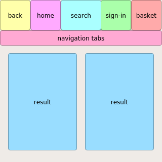
300x300
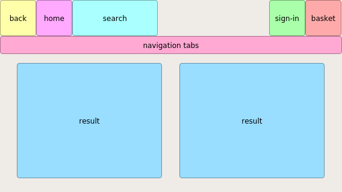
568x320
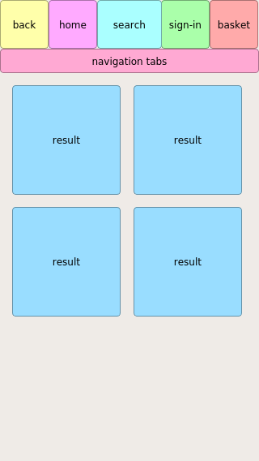
320x568
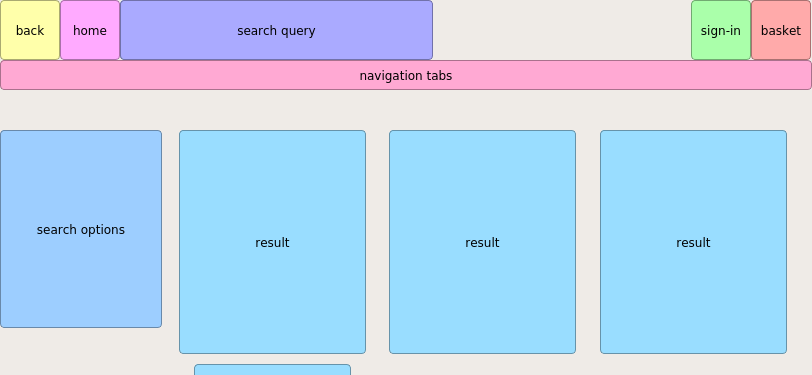
812x375
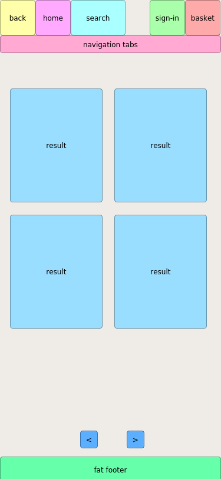
375x812
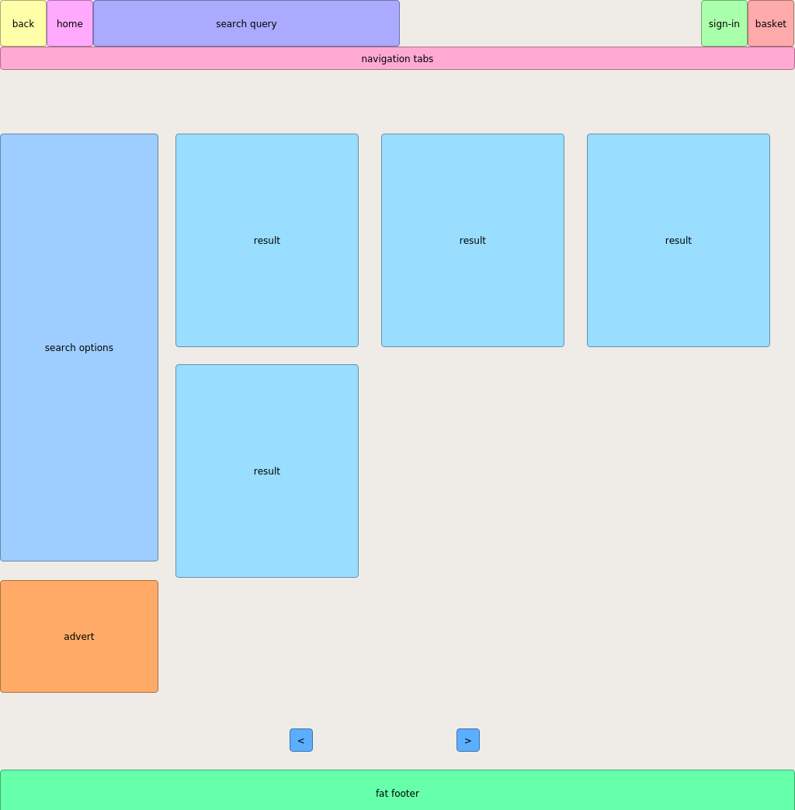
1024x1366
1366x1024
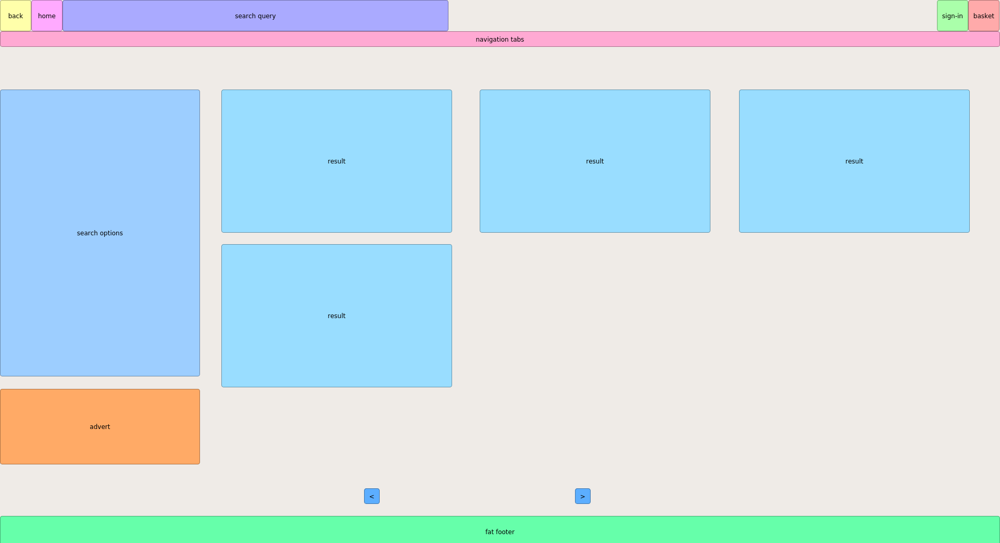
1920x1050
1200x1050
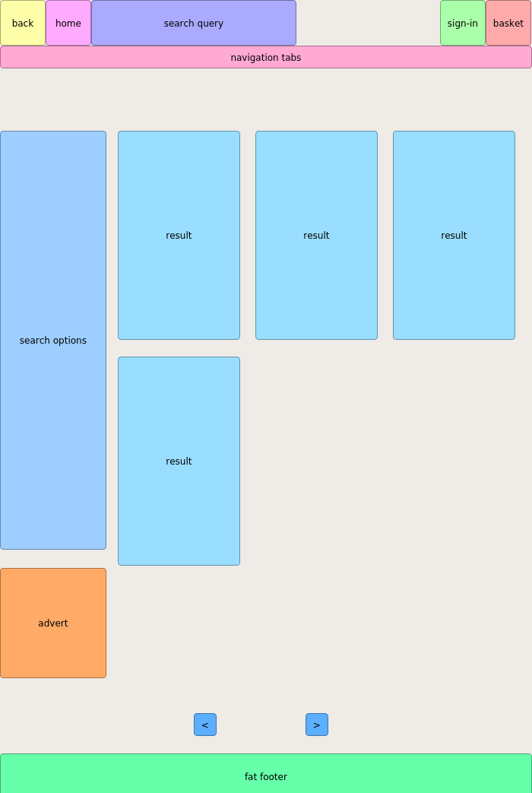
700x1050
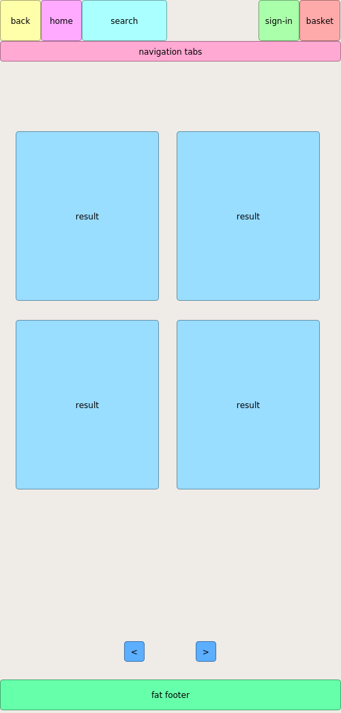
500x1050
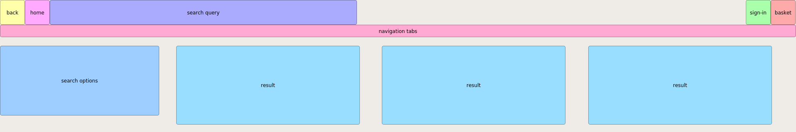
1920x300
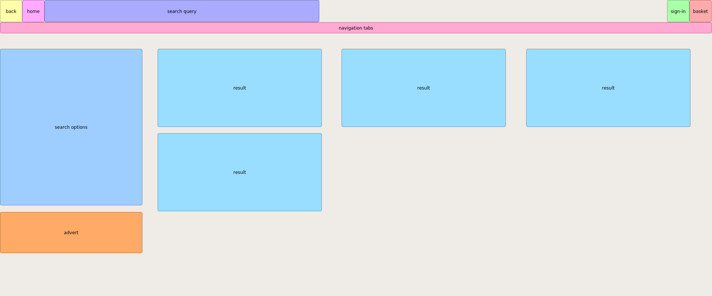
1920x800